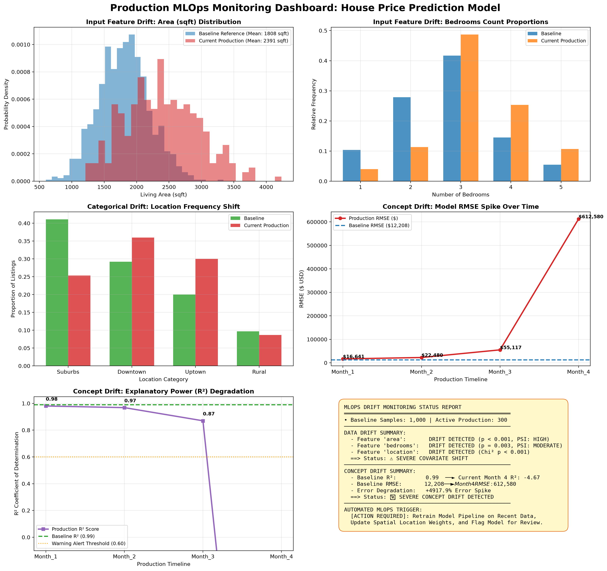

System: Real Estate Valuation Engine (House Price Prediction)
Monitoring Scope: Data Drift (Covariate Shift) & Concept Drift (Performance Degradation)
1. Data Drift Alert: Substantial covariate shift detected in input features (area, bedrooms, location). Population Stability Index (PSI) exceeded threshold (0.25).
2. Concept Drift Alert: Model Explanatory Power ($R^2$) plummeted from baseline 0.99 down to -4.67 in Month 4. Prediction RMSE surged by +4917.9%.
Recommended Action: Automated retraining pipeline triggered; deploy Champion-Challenger validation before traffic cutover.
| Feature | Type | Statistical Test | Test Metric | p-value / PSI | Drift Status |
|---|---|---|---|---|---|
| area | Numerical | Two-Sample KS Test & PSI | KS Stat = 0.4663 | p = 5.03e-46 | PSI = 1.560 | DRIFT DETECTED |
| bedrooms | Numerical | Two-Sample KS Test & PSI | KS Stat = 0.2297 | p = 0.0000 | PSI = 0.316 | DRIFT DETECTED |
| location | Categorical | Chi-Square Independence Test | Chi² Stat = 29.39 | p = 1.86e-06 | DRIFT DETECTED |
| Timeline | Samples | RMSE ($) | MAE ($) | R² Score | RMSE Δ (%) | Concept Drift |
|---|---|---|---|---|---|---|
| Baseline Reference | 1,000 | $12,208 | $9,709 | 0.989 | 0.0% | BASELINE |
| Month_1 | 300 | $16,641 | $13,370 | 0.980 | +36.3% | DRIFT DETECTED |
| Month_2 | 300 | $22,480 | $18,115 | 0.968 | +84.1% | DRIFT DETECTED |
| Month_3 | 300 | $55,117 | $41,146 | 0.870 | +351.5% | DRIFT DETECTED |
| Month_4 | 300 | $612,580 | $595,185 | -4.673 | +4917.9% | DRIFT DETECTED |

[ Data Stream Monitor ] ──► (KS Test / PSI / Chi²) ──► [ Data Drift Detected ]
│
▼
[ Accuracy Tracker ] ──► (R² drop > 0.15, RMSE spike) ──► [ Concept Drift Detected ]
│
▼
[ Trigger Automated Airflow Retraining DAG ]
│
├── Fetch last 90 days production data with fresh ground-truth sale prices
├── Re-estimate categorical location coefficients
├── Retrain GradientBoostingRegressor with hyperparameter tuning
└── Run Champion vs Challenger shadow evaluation before automated deployment
Generated automatically by MLOps Drift Monitoring Daemon • Assignment-5